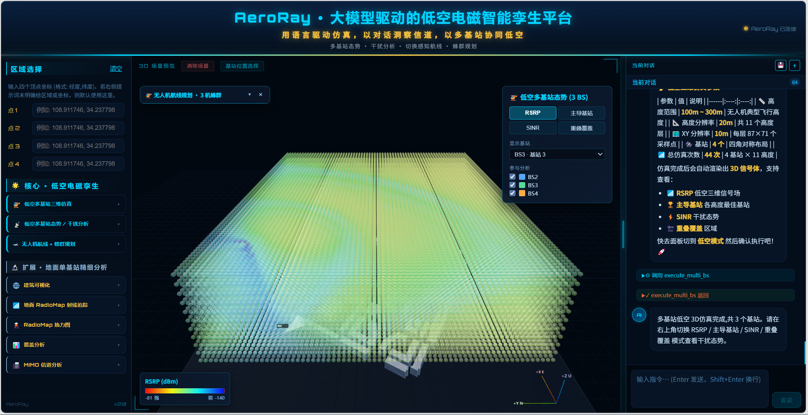
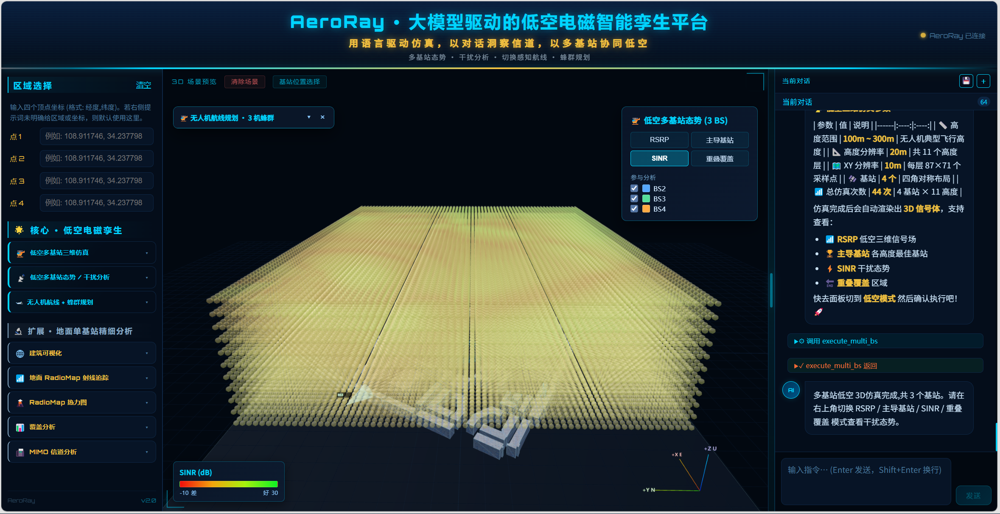
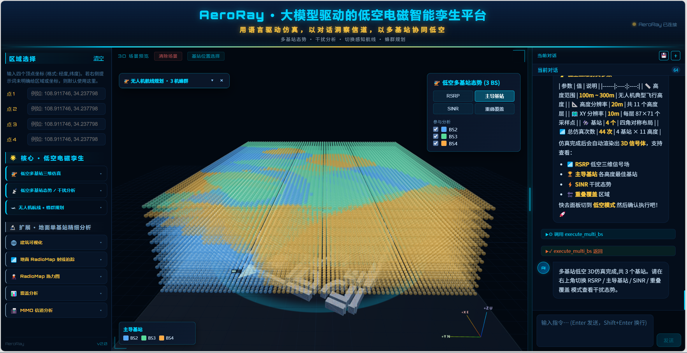
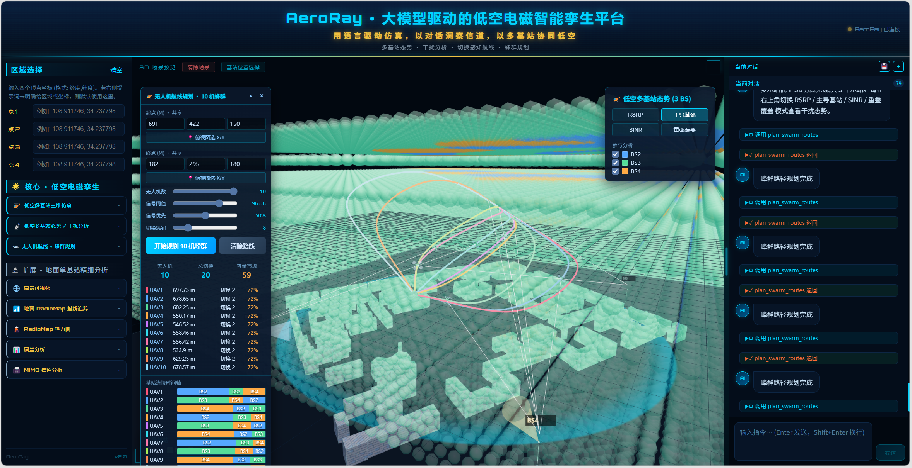
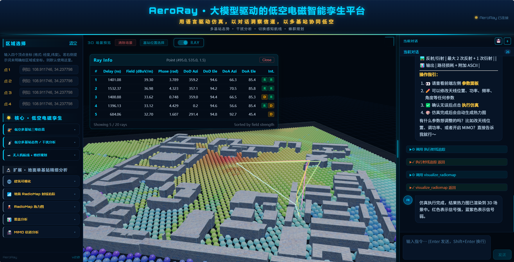
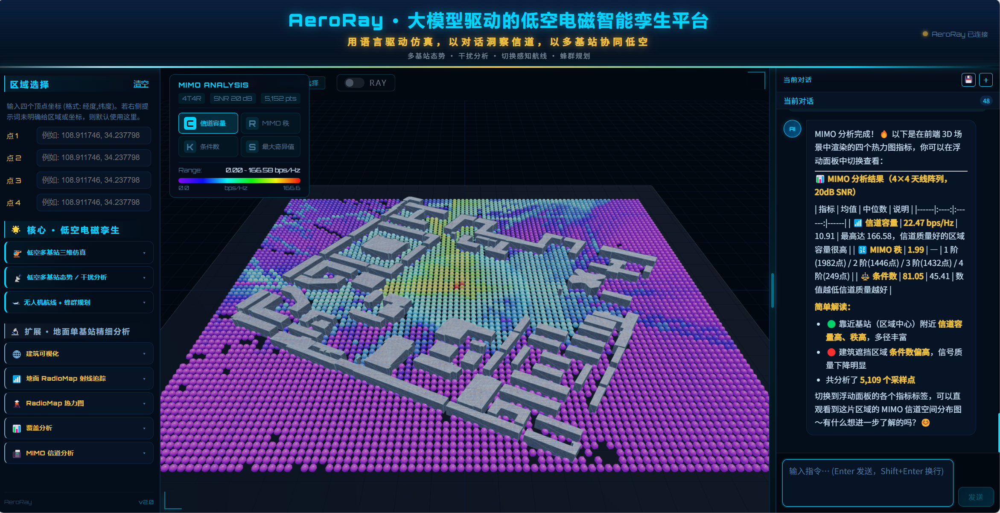
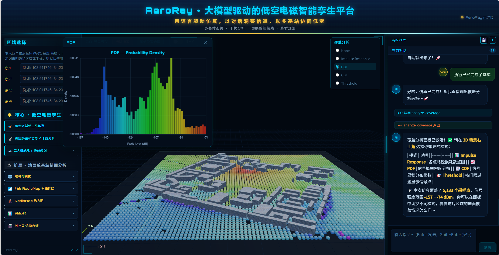
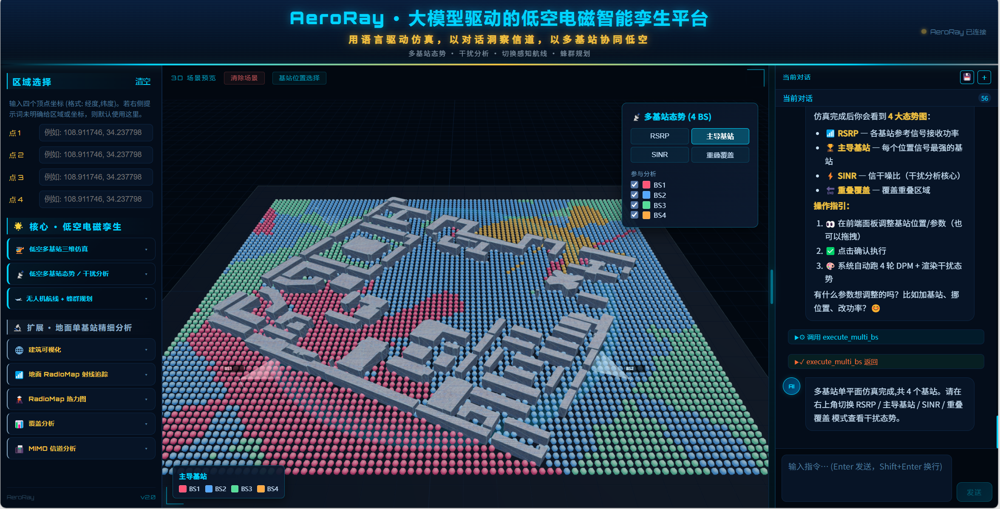

AeroRay
低空电磁智能孪生平台
AeroRay 是一个基于大语言模型驱动的低空电磁智能孪生平台。用户通过自然语言即可完成区域解析、建筑场景建模、多基站三维射线仿真、干扰态势分析，以及无人机/蜂群航线规划，结果以实时 3D 场景在浏览器中呈现。

项目定位
AeroRay 不是简单把 LLM 接入仿真软件，而是把任务理解、流程规划、参数协同和模块编排引入真实 Radio Map 仿真链路。
自然语言入口
用对话描述区域、场景和任务，Agent 自动组织地理数据提取、建筑建模、仿真准备和结果可视化。
工业级仿真底座
底层集成 Altair WinProp，支持 DPM 快速覆盖预测与 IRT 精细射线追踪，保留专业仿真可信度。
低空协同主场景
围绕无人机低空通信，完成多基站三维场构建、干扰态势分析、切换感知路径规划和蜂群协同。
核心能力
多基站多高度仿真
N 个基站 × M 个高度层循环执行 DPM，聚合为可交互的三维 per-BS 信号张量。
干扰态势模式
支持 RSRP、主导基站、SINR、重叠覆盖四类分析，并在前端基于张量实时切换。
蜂群协同规划
支持 1 到 10 架无人机共享起终点，结合初始基站分配、容量约束与时间错峰生成差异化航线。
系统架构
平台由 React/Three.js 前端、FastAPI + LangGraph Agent 后端、C++ WinProp SDK 仿真引擎组成，通过 WebSocket 和文件级 IPC 串联端到端工作流。
自然语言描述区域、低空任务、基站和航线需求。
LangGraph ReAct Agent 调用 11 个工具完成流程规划。
OSM/SHP 建筑提取，转换为 WinProp ODB/OIB 数据库。
C++ 调用 WinProp SDK 执行 DPM/IRT 与 MIMO RunMS。
Three.js 渲染建筑、基站、体素信号场、航线和无人机动画。
关键算法与工程设计
per-BS 三维张量
不把多基站结果压成单张热力图，而是保留每个基站在每个高度层的独立场强，为主导基站、SINR、重叠覆盖和切换规划提供统一数据底座。
切换感知 A*
将状态空间从 (x, y, z) 扩展为 (x, y, z, bs_id)，把当前服务基站、切换代价和信号质量纳入路径搜索。
Agent Ops 稳定性体系
引入 TaskManifest、Guardrails、FailureTaxonomy、Checkpoint/Resume，对 12 类关键工具做前置、后置和互斥检查。
参数确认快速通道
高成本仿真阶段绕过 LLM，由前端参数面板确认后直接触发后端执行，避免模型自行拼装不完整参数导致流程失控。
Agent 架构层
后端采用 FastAPI + LangGraph ReAct Agent。LLM 不直接执行高成本仿真，而是调用经过 Pydantic 校验的工具；关键执行节点由 server 拦截、确认和调度。
多模型接入
通过 `config.yaml` profile 机制切换 Claude、MiniMax、Local Qwen 等模型，统一配置 `base_url / model / api_type / temperature`，温度固定为 0 保证流程稳定。
LangGraph ReAct 编排
Agent 以“推理 → 调工具 → 读结果 → 再推理”的循环完成任务，每个会话用 `thread_id` 隔离，并用 MemorySaver 保存状态。
LLM 可见工具
| 工具 | 职责 | 说明 |
|---|---|---|
| resolve_area | 地名/坐标标准化，创建 run_dir | 所有新任务必须先调用 |
| extract_buildings | OSM/本地 SHP 建筑提取、裁剪、去重叠 | 输出建筑 JSON 与最终 SHP |
| export_odb | SHP 转 WinProp ODB/OIB | DPM 输出 .odb，IRT 额外生成 .oib |
| visualize_scene | 建筑预览与 3D scene_data 生成 | 前端可直接恢复场景 |
| prepare_multi_bs | 低空/地面多基站参数准备 | 当前低空主入口，默认 `mode=low_alt` |
| prepare_ray_tracing / execute_ray_tracing | 地面单基站 DPM/IRT 准备与执行 | 用于精细覆盖、射线和 MIMO 分析 |
| visualize_radiomap / analyze_coverage / analyze_mimo | 地面单基站后处理 | 覆盖统计、MIMO SVD、RadioMap 可视化 |
自然语言请求 → resolve_area → extract_buildings → visualize_scene → export_odb(pred_model="dpm") → prepare_multi_bs(mode="low_alt") → 前端 MultiBSPanel 参数确认 → server 直接 execute_multi_bs → Three.js 加载三维信号场、干扰态势和航线结果
低空多基站协同算法
低空模块是 AeroRay 的核心，面向低空通信走廊评估、多基站干扰态势和无人机/蜂群通信约束航线规划。
低空覆盖空洞
现网基站天线多为对地下倾，100m 以上可能出现弱覆盖，需要构建多个高度层的联合三维信号场。
多基站干扰态势
同一低空位置可能被多个基站覆盖，系统提供 RSRP、主导基站、SINR、重叠覆盖四类视图。
通信感知航线
航线规划不仅考虑距离与障碍，还把链路质量和基站切换代价纳入搜索。
核心模块
| 文件 | 职责 | 关键点 |
|---|---|---|
| skill/multi_bs/skill_multi_bs.py | 多基站编排层 | prepare_multi_bs、execute_multi_bs、plan_multi_bs_route、plan_swarm_routes |
| skill/multi_bs/field_store.py | per-BS 张量存取 | npz 存储、障碍掩码、默认基站布局 |
| skill/multi_bs/handover_astar.py | 切换感知 A* | 状态空间扩展为 `(x,y,z,bs_id)` |
| skill/multi_bs/swarm_planner.py | 蜂群规划 | 优先级解耦、容量约束、初始基站多样化 |
per-BS 三维张量
`execute_multi_bs()` 在低空模式输出 `(N_bs, nx, ny, nz)`，保留每个基站在每个高度层的独立场强，用于推导主导基站、SINR、重叠覆盖、切换路径和容量约束。
前端实时干扰分析
InterferenceOverlay 直接从张量计算 RSRP、Dominance、SINR、Overlap，切换视图无需重跑后端仿真。
切换感知 A*
传统 A* 的 `(x,y,z)` 被扩展为 `(x,y,z,bs_id)`，只有当前基站弱且目标基站提升明显时才切换，避免乒乓效应。
蜂群协同
多机共享起终点时，通过初始服务基站分散、每基站容量限制和时间错峰生成差异化航线。
数据获取与 WinProp 仿真引擎
底层计算由 Python 编排、C++ 调用 Altair WinProp SDK 完成，不是前端近似渲染。
地名/坐标 → polygon.json。
OSM Overpass 或本地 SHP 裁剪。
WGS84 → 像素坐标 → ODB 坐标。
SHP2ODB_debug.exe 生成 .odb/.oib。
PropagationRunMSMIMOSingle 调用 DPM/IRT/MIMO。
DPM 主导路径模型
基于主导传播路径估算信号强度，速度快，适合大范围、多高度、多基站循环仿真。低空主链路固定使用 DPM。
- 输入：`.odb` 建筑数据库
- 频率：3500 MHz
- 发射功率：23 dBm
- 适用：低空三维覆盖、多基站态势
IRT 智能射线追踪
考虑反射、衍射、散射等物理传播路径，精度更高但计算量大，适合地面单基站精细分析。
- 输入：`.oib` 预处理数据库
- 支持点击 RadioMap 查看主导射线
- 预处理分辨率生成后不可更改
- 适用：覆盖分析、MIMO、射线解释
前端展示层
前端采用 React + Three.js + WebSocket，把对话、参数确认、三维场景和分析浮层放在同一工作台内。
FeaturePanel
功能入口、区域坐标输入、多基站/单基站/低空场景触发。
ThreeScene
渲染建筑、基站塔、信号场体素、分段着色航线、无人机动画和动态连接线。
ChatPanel
显示流式对话、工具调用、工具结果、错误提示和多会话记录。
MultiBSPanel
确认基站位置、频率、功率、分辨率和高度层。
UAVPlanPanelV2
统一承载单机与蜂群路径规划，展示切换时间轴和规划指标。
InterferenceOverlay
提供 RSRP、SINR、主导基站、重叠覆盖四种干扰态势视图。
地面单基站与扩展分析能力
低空多基站是主链路，地面单基站 IRT、覆盖统计、MIMO 信道分析作为精细分析工具，补充解释性和通信指标评估。
IRT 射线追踪
点击 RadioMap 任意点后，系统从 `.str` 结果中提取附近主导射线，在三维场景中绘制传播路径，并展示时延、场强、角度、反射/衍射类型等信息。
覆盖统计分析
CoverageOverlay 支持 IR、PDF、CDF、Threshold 四类视图，从整体分布角度评估覆盖质量，而不是只依赖热力图颜色。
MIMO 信道分析
基于 4×4 复数信道矩阵执行 SVD，计算信道容量、有效秩、条件数、最大奇异值，用于评估空间复用能力和信道健康度。
地面多基站态势
当用户明确要求地面/2D/单平面场景时，系统可运行平面多基站仿真，展示地面主导基站与干扰分布。
MIMO 四类指标
| 指标 | 计算含义 | 物理意义 |
|---|---|---|
| 信道容量 | Σ log₂(1 + SNR/Nt × σᵢ²) | 给定 SNR 下的理论最大传输速率 |
| 有效秩 | 奇异值大于阈值的数量 | 可并行传输的独立空间流数量 |
| 条件数 | σmax / σmin | 信道矩阵健康度，越小越均衡 |
| 最大奇异值 | 主奇异值强度 | 主信道增益强度 |
数据流、协议与文件产物
每个任务创建独立 `run_dir`，通过文件边界沉淀中间状态，便于追踪、复用和断点恢复。
低空 WebSocket 消息
| 消息 | 方向 | 用途 |
|---|---|---|
| multi_bs_config | server → client | 推送多基站参数面板配置 |
| multi_bs_confirmed | client → server | 用户确认多基站仿真参数 |
| multi_bs_progress | server → client | 推送 N×M 次 DPM 仿真进度 |
| plan_swarm | client → server | 触发 1-10 架无人机蜂群规划 |
| swarm_done / uav_route_done | server → client | 返回蜂群/单机路径规划结果 |
| viz_update | server → client | 通知前端重新加载 scene_data |
resu/{timestamp}/
├── polygon.json
├── json/buildings_with_height.json
├── shp/result_final.shp
├── shp/result_final.odb
├── shp/result_final_IRT.oib
├── ground/BS1/h1/Antenna_1 Path Loss.txt
├── ground/BS1/h1/runMS/ChannelMatricesPerPoint.txt
├── dikong/multi_bs_field.npz
├── dikong/multi_bs_field_meta.json
├── scene_data.json
├── ray_tracing_params.json
└── final_visualization.png
Agent Ops 稳定性体系
这是 AeroRay 区别于“套壳 LLM/LangChain”的核心工程部分：把 Prompt 约束、流程阶段、失败恢复和指标统计代码化。
Agent Ops 代码
7 个解耦模块覆盖任务清单、状态机、护栏、失败分类、断点续跑、集成层与指标聚合。
工作流阶段
从 CREATED、AREA_RESOLVED 到 MULTI_BS_DONE、FAILED、CANCELLED，合法跃迁由状态机控制。
工具护栏
对关键工具执行前置检查、互斥检查和产物后置检查，避免无效调用污染下游。
Agent Ops 模块地图
| 模块 | 路径 | 核心能力 |
|---|---|---|
| 任务清单 | task_manifest.py | TaskManifest、TaskEvent、JSONL 事件日志 |
| 状态机 | workflow_state.py | WorkflowStage、TRANSITIONS、Checkpoint |
| 代码级护栏 | guardrails.py | TOOL_GUARDRAILS，检查模式、文件、确认状态和输出 |
| 失败分类学 | failure_taxonomy.py | 5 类失败、20+ 错误码、恢复策略 |
| 断点续跑 | resume.py | CheckpointManager、ResumeManager |
| 统一集成层 | integration.py | AgentOpsManager 与 tool_execution 上下文管理器 |
| 指标聚合 | trace_metrics.py | 任务级、工具级、Agent 决策级指标 |
FailureTaxonomy
错误分为用户输入、LLM 决策、工具执行、状态管理、流程中断 5 类，并绑定检测条件与恢复策略。
Checkpoint/Resume
多基站仿真中断时保存阶段、参数、产物与已完成步骤；下次从最近可恢复节点继续。
Guardrails
覆盖 `resolve_area`、`prepare_multi_bs`、`execute_multi_bs`、`visualize_radiomap`、`analyze_mimo`、`plan_swarm_routes` 等 12 类工具。
Agent 身份系统
`IDENTITY.md` 明确三类场景路由，并用 `[REOPEN_PARAMS]` 避免 LLM 直接拼参数执行高成本仿真。
评测、测试与实验结果
文档中同时给出了 LLM 编排评测、算法测试、基准对比、覆盖退化和蜂群规划性能数据。
LLM 编排平均分
50 条 plan 用例总分 42.5，核心场景通过率 100%。
算法测试通过
单元、真实场景集成、性能基准和对比实验共 29 个用例，100% 通过，总耗时 143 秒。
切换次数
长距离路径规划中，Ours 将 Greedy 的 7 次切换降为 0 次。
路径规划算法对比
| 算法 | 路径长度 | 基站切换次数 | 扩展节点 | 耗时 |
|---|---|---|---|---|
| Ours（切换感知 A*） | 836.4 m | 0 | 21,533 | 2.42s |
| Greedy | 927.9 m | 7 | 36,155 | 1.32s |
| Dijkstra（无切换惩罚） | 882.8 m | 2 | 35,041 | 4.12s |
高度覆盖退化
3 基站、100m~300m 实验中，100m 覆盖率为 97.5%；300m 覆盖率降至 89.8%，单基站覆盖比例升至 27.8%，验证低空通信走廊存在覆盖空洞。
蜂群规划性能
1、3、5、10 架无人机均 100% 成功；10 架时初始基站完全分散，容量违规来自 3 基站 × 容量 3 小于 10 的物理约束。
工程实现与代码规模
AeroRay 覆盖 Agent、Skill、仿真、可视化、协议和稳定性基础设施，是完整工程系统而不是单一演示页面。
| 类型 | 文件数 | 行数 | 职责 |
|---|---|---|---|
| Python | 60 | 13,854 | Agent、Skill、接口、数据处理、Agent Ops |
| JSX | 19 | 5,259 | React 组件、三维交互、分析面板 |
| JavaScript | 3 | 4,398 | 前端工具、数据解析、协议处理 |
| CSS | 17 | 3,225 | 科技仪表盘样式与布局 |
| C++ | 2 | 1,060 | WinProp SDK 接入、SHP 转 ODB、传播仿真 |
| 合计 | 104 | 28,032 | 端到端全栈系统 |
项目截图
截图已复制到当前个人网站项目内，页面可离线本地访问。

低空 RSRP
展示多基站低空三维覆盖强度，用于识别覆盖空洞与弱覆盖区域。

低空 SINR
结合信号与干扰计算链路质量，支撑低空通信态势判断。

主导基站分布
显示每个空间位置的服务基站，用于分析服务区边界与切换机会。

10 架无人机蜂群路径
基于初始基站分散、容量约束和切换代价生成多条差异化航线。

地面 IRT 射线检查
点击热力图点位后回查主导射线路径，解释信号衰落来源。

MIMO 信道分析
基于 4×4 信道矩阵进行容量、秩、条件数和奇异值可视化。

覆盖统计分析
通过 IR/PDF/CDF/Threshold 多视图分析 RadioMap 分布和弱覆盖区域。

地面多基站主导基站
展示单平面多基站服务区域划分，用于地面覆盖态势评估。
验证结果
在西电真实场景长距离路径规划中，切换感知 A* 相比 Greedy 将基站切换次数从 7 降至 0，路径缩短 9.9%，搜索节点减少 40.3%。
包含单元、真实场景集成、性能基准和对比实验共 29 个算法测试用例，文档记录为 100% 通过。
LLM 编排评测包含 50 条 plan 用例和 10 条上下文用例，形成“指标 → 评测 → Prompt 反哺”的闭环。